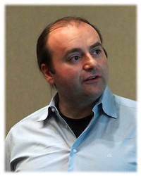

TLB flush optimization
Aneesh started by saying there needs to be an easier way to flush a range of TLB entries. But, when it comes time to do a TLB flush, it is not always easy to know what the size of the range is. A possible solution would be to track multiple flushes in the mmu_gather structure used with TLB flushing and push it all out at once. The idea seemed to be reasonably well accepted and was not discussed at length.
Andrea got up to talk about a related issue: overly long reverse-mapping (rmap) walks. Reverse mappings are the mechanism by which the kernel can determine which processes have a given page in their page tables. They are kept in a linked list which, Andrea said, can get to be very long, causing the kernel to spend a long time traversing the list. On a virtualization-heavy system with KSM enabled, the lists can grow toward one million entries.
That leads to a clear desire to reduce the length of the lists. One simple
proposal is to just cap the length of the rmap list to something like 256;
after that, a new mapping would be needed. Or, even without a maximum list

Andrea is also interested in reducing the cost of IPIs associated with memory-management changes. One place where IPIs can happen is with the tracking of referenced pages; he noted that page_referenced(), which checks whether a given page has been referenced via any of its mappings, no longer sends IPIs in the normal case. It traverses the rmap lists, though, so is affected by long list lengths. But, beyond that, the memory-management unit notifier in the KVM hypervisor does do IPIs, since there is no "accessed" bit that is maintained by the hardware in the shadow page tables in guest systems. That can lead to scalability problems.
Another place with rmap scalability problems is page migration, which must walk the entire rmap list and perform TLB flushing. Offlining memory from guests requires migration, so this can be a significant issue. There are patches in circulation to do the flushing in batches and reduce the resulting IPIs. This work is good but needs to be extended somewhat.
The session wound down without much in the way of real conclusions. TLB
flushing and the related machinery, it was agreed, present some scalability
issues, and work will be required, as always, to mitigate those issues.
| Index entries for this article | |
|---|---|
| Kernel | Memory management/Translation lookaside buffer |
| Conference | Storage, Filesystem, and Memory-Management Summit/2016 |